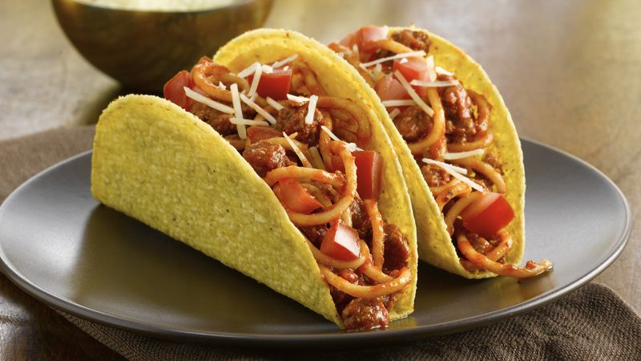

Home
Spaghetti Tacos

Description
Did you love iCarly as a kid and have always wanted to try that silly combination of a crispy taco shell filled
with spaghetti? Even if you have no idea what I'm talking about and just stumbled upon this recipe, well, you've come to
the right place for a delicious and fun meal. You or your kids will surely love it!
Ingredients
- 1 lb ground beef or 1 lb ground turkey
- 1 (1 1/4 ounce) packet taco seasoning
- 1 cup water
- 1 (26 ounce) jar spaghetti sauce
- 1 (8 ounce) box spaghetti noodles
- 12 hard taco shells
Steps
- Prepare noodles according to package directions. Drain and return to pot.
- Brown meat in pan until no longer pink. Add taco seasoning and water. Bring to a boil. Reduce heat and simmer
for 5-6 minutes, until sauce thickens. Add spaghetti sauce and cook until warmed. Add to noodles and mix
thoroughly.
- To assemble the tacos, place a spoonful of salsa in the shell. Sprinkle with a small amount of cheese.
Finally, finish filling the shell with spaghetti. Add lettuce on top, if desired.